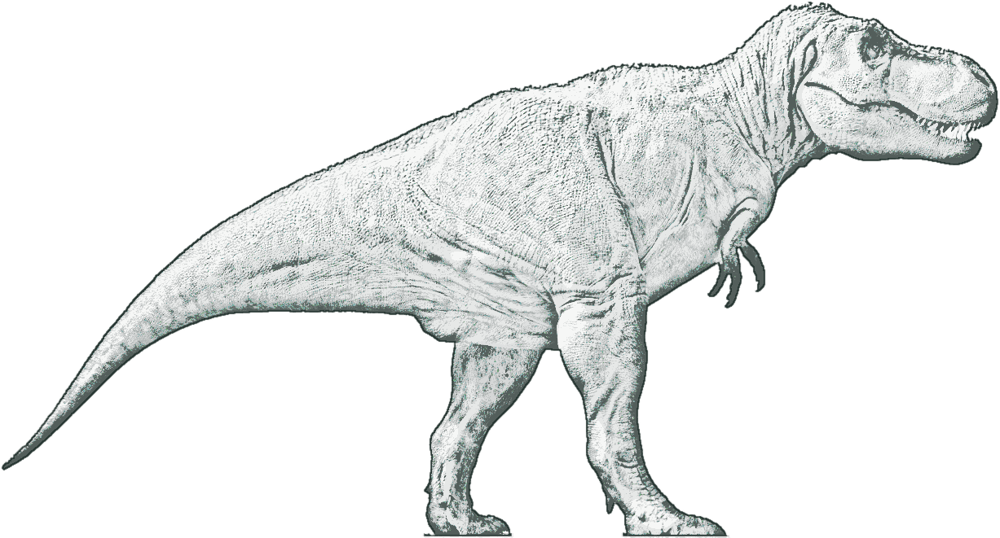

The Dino Field Club
Now walk through 186 million years. Just keep scrolling.
Keep exploring
What color was it?
Nobody knows. You pick.

Uh-oh. Somebody mixed up the bones.
Swap the tail, the body and the head until you build something that really lived.